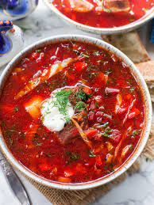

Borscht!

Recipe
According to Simply Recipes
Prep Time: 25 min
Cook Time: 2 hrs 30 min
Total TIme: 2 hr 55 mins
Ingredients
- 1 large onion, chopped
- 8 cups beef broth
- 4 large beets
- 4 carrots
- 1 large russet potato
- 2 cups thinly sliced cabbage
- etc...
Steps
- Brown the beef, then cook the onions:
- Add 4 cups broth and simmer until the beef is tender:
- Preheat the oven to 400°F.
- Meanwhile, prep and roast the root vegetables:
- Remove the meat from the pot:
- Finish cooking the soup: